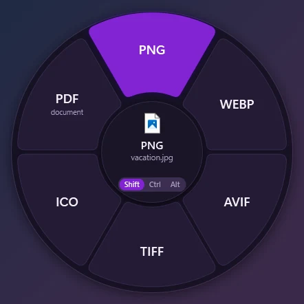
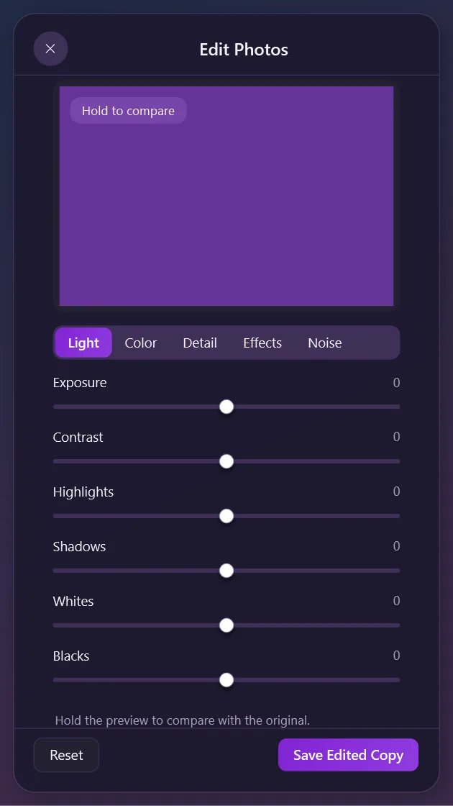
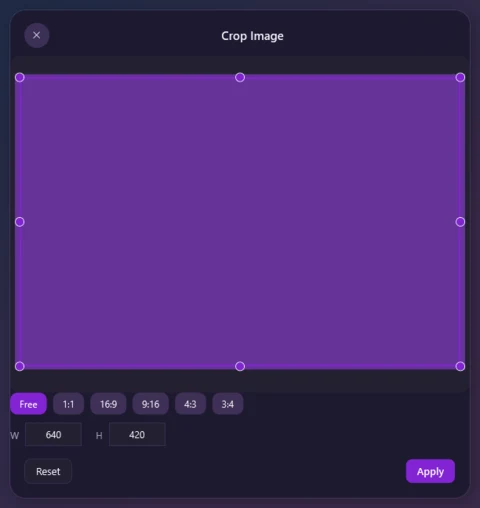
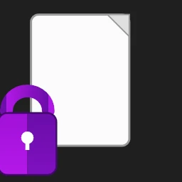
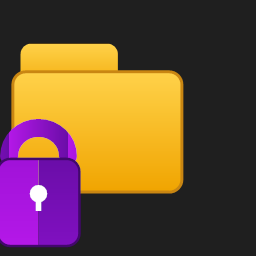

Convertتحويل
Choose an output format. The original is only read; the result lands next to it or in the folder you drop on.اختر صيغة الإخراج. يُقرأ الأصل فقط، ويُكتب الناتج بجانبه أو في المجلد الذي تُفلته عليه.
JPG → PNG · MP4 → MP3 · DOCX → PDF
Windows 10 (1809+) or 11 · 64-bit · Free and open source ويندوز 10 (1809 أو أحدث) أو 11 · 64 بت · مجاني ومفتوح المصدر
Grab a file, tap a key, drop it on the tool you need. Convert, edit, protect and lock — without opening an app. اسحب ملفًا، واضغط مفتاحًا، وأفلته على الأداة التي تريد. تحويل وتحرير وحماية وقفل — دون فتح تطبيق.
SHA-256
7381cbd5b59249f3279b62af31091d89d3d8d994faa57fcdd08ec4331d7156ce
SHA256SUMS.txt
Processed on your PC. Nothing is uploaded. تُعالَج على جهازك. لا يُرفَع أي شيء.

Rendered from the shipped app. No mock-ups. لقطة من التطبيق المُسلَّم نفسه. بلا نماذج وهمية.
The gestureالإيماءة
The wheel opens at the pointer while you drag, and stays open until you drop, so you can release the key and tap another one to switch wheels; drop on a slice to run it. The gesture is off on a fresh install — turn it on once in Settings. تُفتح العجلة عند المؤشر أثناء السحب، وتبقى مفتوحة حتى الإفلات، فيمكنك رفع إصبعك عن المفتاح والضغط على مفتاح آخر لتبديل العجلة، ثم الإفلات على قطاع لتنفيذه. الإيماءة معطّلة في التثبيت الجديد — شغّلها مرة واحدة من الإعدادات.

Choose an output format. The original is only read; the result lands next to it or in the folder you drop on.اختر صيغة الإخراج. يُقرأ الأصل فقط، ويُكتب الناتج بجانبه أو في المجلد الذي تُفلته عليه.
JPG → PNG · MP4 → MP3 · DOCX → PDF
Open a floating tool that works on the file in place: crop, trim, compress, protect, lock and more.افتح أداة عائمة تعمل على الملف نفسه: اقتصاص وضغط وحماية وقفل والمزيد.
Crop · Trim · Compress · Protect
Copy, move, copy the path, open a terminal, float the file on the shelf, or share it.انسخ أو انقل أو انسخ المسار أو افتح الطرفية أو علّق الملف على الرف أو شاركه.
Copy to… · Move to… · Copy path · Terminal
26 floating tools26 أداة عائمة
Each window sizes itself to the media: portrait stays tall, landscape stays wide, and the controls never shrink. Captures are app self-test renders; the set grows tool by tool. كل نافذة تُكيّف حجمها مع الوسائط: الطولي يبقى طويلًا والعرضي عريضًا، ولا تتقلّص عناصر التحكم. اللقطات من اختبار التطبيق الذاتي، وتُضاف أدوات جديدة تدريجيًا.
Capture pendingاللقطة قادمة
This window has no verified capture yet. The app's self-test renders it next; no mock-up is shown in the meantime.لا توجد لقطة موثّقة لهذه النافذة بعد. يلتقطها اختبار التطبيق الذاتي لاحقًا، ولا تُعرض أي صورة وهمية في الأثناء.
Shrink one image, audio file, video or PDF to a target size or percentage; the source is untouched.اضغط صورة أو ملفًا صوتيًا أو فيديو أو PDF إلى حجم مستهدف أو نسبة، دون المساس بالمصدر.
1 image, audio, video or PDFملف واحد: صورة أو صوت أو فيديو أو PDF
Capture pendingاللقطة قادمة
This window has no verified capture yet. The app's self-test renders it next; no mock-up is shown in the meantime.لا توجد لقطة موثّقة لهذه النافذة بعد. يلتقطها اختبار التطبيق الذاتي لاحقًا، ولا تُعرض أي صورة وهمية في الأثناء.
Edit EXIF, IPTC, XMP, PDF info and chapters — or clear camera and location in one action.حرّر EXIF وIPTC وXMP ومعلومات PDF والفصول — أو أزل الكاميرا والموقع بضغطة.
1 image, audio, video or PDFملف واحد: صورة أو صوت أو فيديو أو PDF
Capture pendingاللقطة قادمة
This window has no verified capture yet. The app's self-test renders it next; no mock-up is shown in the meantime.لا توجد لقطة موثّقة لهذه النافذة بعد. يلتقطها اختبار التطبيق الذاتي لاحقًا، ولا تُعرض أي صورة وهمية في الأثناء.
Decode a QR code from an image offline. Only http and https links can be opened.فكّ رمز QR من صورة محليًا. تُفتح روابط http وhttps فقط.
1 imageصورة واحدة

Sixteen sliders for light, colour and grain, previewed on the real image. A neutral edit is a byte-for-byte copy.ستة عشر شريطًا للضوء واللون والحبيبات، بمعاينة على الصورة الحقيقية. التعديل المحايد نسخة بايتية.
1 still imageصورة ثابتة واحدة

Arrows, shapes, text and stamps with colour and stroke controls. Undo, reorder, and export a flat copy.أسهم وأشكال ونصوص وأختام مع لون وسماكة. تراجع، وأعد الترتيب، وصدّر نسخة مسطّحة.
1 imageصورة واحدة

Pad, round and colour the frame around a photo: nine gradients, nine solids or your own image.أضف حشوة وزوايا ولونًا حول الصورة: تسعة تدرّجات وتسعة ألوان صلبة أو صورتك.
1 imageصورة واحدة

Drag the rectangle, lock a ratio, and apply at the original pixel size. The source is never rewritten.اسحب المستطيل، وثبّت نسبة الأبعاد، وطبّق بالحجم الأصلي للبكسل. لا يُعاد كتابة المصدر أبدًا.
1 imageصورة واحدة

Solid, blur or pixelate over the areas you draw — with automatic text detection.حجب صلب أو تمويه أو بكسلة فوق ما ترسمه — مع كشف تلقائي للنص.
1 imageصورة واحدة
Capture pendingاللقطة قادمة
This window has no verified capture yet. The app's self-test renders it next; no mock-up is shown in the meantime.لا توجد لقطة موثّقة لهذه النافذة بعد. يلتقطها اختبار التطبيق الذاتي لاحقًا، ولا تُعرض أي صورة وهمية في الأثناء.
Arrange two or more photos into 1080², 1920×1080 or 1080×1920, with spacing, rounded cells and a background.رتّب صورتين أو أكثر في 1080² أو 1920×1080 أو 1080×1920، مع فراغ وزوايا مستديرة وخلفية.
2+ imagesصورتان أو أكثر
Capture pendingاللقطة قادمة
This window has no verified capture yet. The app's self-test renders it next; no mock-up is shown in the meantime.لا توجد لقطة موثّقة لهذه النافذة بعد. يلتقطها اختبار التطبيق الذاتي لاحقًا، ولا تُعرض أي صورة وهمية في الأثناء.
Scrub the timeline, set in and out, and stream-copy when the codecs allow it — with a re-encode fallback.تنقّل في الخط الزمني، وحدّد البداية والنهاية، وانسخ البثّ متى سمحت الصيغ — مع إعادة ترميز بديلة.
1 videoفيديو واحد
Capture pendingاللقطة قادمة
This window has no verified capture yet. The app's self-test renders it next; no mock-up is shown in the meantime.لا توجد لقطة موثّقة لهذه النافذة بعد. يلتقطها اختبار التطبيق الذاتي لاحقًا، ولا تُعرض أي صورة وهمية في الأثناء.
Crop the frame with a draggable rectangle and ratio chips; output dimensions stay even.اقتصّ الإطار بمستطيل قابل للسحب وشرائح نسب، بأبعاد زوجية دائمًا.
1 videoفيديو واحد
Capture pendingاللقطة قادمة
This window has no verified capture yet. The app's self-test renders it next; no mock-up is shown in the meantime.لا توجد لقطة موثّقة لهذه النافذة بعد. يلتقطها اختبار التطبيق الذاتي لاحقًا، ولا تُعرض أي صورة وهمية في الأثناء.
0.25× to 4× with the audio pitch kept. A silent clip is fine.من 0.25× إلى 4× مع الحفاظ على طبقة الصوت. المقطع الصامت لا يمثّل مشكلة.
1 videoفيديو واحد
Capture pendingاللقطة قادمة
This window has no verified capture yet. The app's self-test renders it next; no mock-up is shown in the meantime.لا توجد لقطة موثّقة لهذه النافذة بعد. يلتقطها اختبار التطبيق الذاتي لاحقًا، ولا تُعرض أي صورة وهمية في الأثناء.
Reorder clips by drag. The first clip sets the size and frame rate; the rest are scaled and padded to fit.رتّب المقاطع بالسحب؛ يحدّد المقطع الأول الحجم ومعدل الإطارات، وتُحجَّم بقية المقاطع لتلائمه وتُضاف إليها حواف سوداء.
2+ videosفيديوهان أو أكثر
Capture pendingاللقطة قادمة
This window has no verified capture yet. The app's self-test renders it next; no mock-up is shown in the meantime.لا توجد لقطة موثّقة لهذه النافذة بعد. يلتقطها اختبار التطبيق الذاتي لاحقًا، ولا تُعرض أي صورة وهمية في الأثناء.
Stop on a frame, step one at a time, and save full-resolution PNGs into a new folder.توقّف عند إطار، وتقدّم إطارًا واحدًا، واحفظ صور PNG بالدقة الكاملة في مجلد جديد.
1 videoفيديو واحد
Capture pendingاللقطة قادمة
This window has no verified capture yet. The app's self-test renders it next; no mock-up is shown in the meantime.لا توجد لقطة موثّقة لهذه النافذة بعد. يلتقطها اختبار التطبيق الذاتي لاحقًا، ولا تُعرض أي صورة وهمية في الأثناء.
Cut one video into equal parts or exact ranges, each part written to its own file.اقسم فيديو واحدًا إلى أجزاء متساوية أو مقاطع دقيقة، كل جزء في ملفه.
1 videoفيديو واحد
Capture pendingاللقطة قادمة
This window has no verified capture yet. The app's self-test renders it next; no mock-up is shown in the meantime.لا توجد لقطة موثّقة لهذه النافذة بعد. يلتقطها اختبار التطبيق الذاتي لاحقًا، ولا تُعرض أي صورة وهمية في الأثناء.
Draw a rectangle over what must be hidden, give it a time range, and pick a solid colour or blur.ارسم مستطيلًا فوق ما يجب إخفاؤه، وحدّد مدته، واختر لونًا صلبًا أو تمويهًا.
1 videoفيديو واحد
Capture pendingاللقطة قادمة
This window has no verified capture yet. The app's self-test renders it next; no mock-up is shown in the meantime.لا توجد لقطة موثّقة لهذه النافذة بعد. يلتقطها اختبار التطبيق الذاتي لاحقًا، ولا تُعرض أي صورة وهمية في الأثناء.
Waveform handles, exact time boxes, automatic silent-end trimming and playback of the selection.مقابض على الموجة، ومربعات زمنية دقيقة، وقصّ الأطراف الصامتة تلقائيًا، وتشغيل المقطع.
1 audio fileملف صوتي واحد
Capture pendingاللقطة قادمة
This window has no verified capture yet. The app's self-test renders it next; no mock-up is shown in the meantime.لا توجد لقطة موثّقة لهذه النافذة بعد. يلتقطها اختبار التطبيق الذاتي لاحقًا، ولا تُعرض أي صورة وهمية في الأثناء.
Drag sections on the bleep layer, resize their edges, and hear the tone before applying.اسحب مقاطع على طبقة الصافرة، وحرّك حوافها، واستمع إلى النغمة قبل التطبيق.
1 audio fileملف صوتي واحد
Capture pendingاللقطة قادمة
This window has no verified capture yet. The app's self-test renders it next; no mock-up is shown in the meantime.لا توجد لقطة موثّقة لهذه النافذة بعد. يلتقطها اختبار التطبيق الذاتي لاحقًا، ولا تُعرض أي صورة وهمية في الأثناء.
Choose mono or stereo, set each side's level, and solo one side on the real waveform.اختر أحاديًا أو ستيريو، واضبط مستوى كل جانب، واعزل جانبًا واحدًا على الموجة الحقيقية.
1 audio fileملف صوتي واحد
Capture pendingاللقطة قادمة
This window has no verified capture yet. The app's self-test renders it next; no mock-up is shown in the meantime.لا توجد لقطة موثّقة لهذه النافذة بعد. يلتقطها اختبار التطبيق الذاتي لاحقًا، ولا تُعرض أي صورة وهمية في الأثناء.
Target EBU R128 loudness with an analysis pass that predicts the result, then a two-pass apply.استهدف مستوى صوت EBU R128 مع تحليل يتوقّع النتيجة وتطبيق على مرحلتين.
1 audio fileملف صوتي واحد
Capture pendingاللقطة قادمة
This window has no verified capture yet. The app's self-test renders it next; no mock-up is shown in the meantime.لا توجد لقطة موثّقة لهذه النافذة بعد. يلتقطها اختبار التطبيق الذاتي لاحقًا، ولا تُعرض أي صورة وهمية في الأثناء.
Turn audio into an MP4 with a moving waveform or vector scope, on black or a still, in three shapes.حوّل الصوت إلى MP4 بموجة متحركة أو نطاق متجه، على خلفية سوداء أو صورة، بثلاثة أُطُر: أفقي ورأسي ومربّع.
1 audio fileملف صوتي واحد
Capture pendingاللقطة قادمة
This window has no verified capture yet. The app's self-test renders it next; no mock-up is shown in the meantime.لا توجد لقطة موثّقة لهذه النافذة بعد. يلتقطها اختبار التطبيق الذاتي لاحقًا، ولا تُعرض أي صورة وهمية في الأثناء.
Merge two or more PDFs or images, reorder them with arrows; page rotation and text are preserved.ادمج ملفّي PDF أو أكثر أو صورًا، ورتّبها بالأسهم؛ يُحافَظ على تدوير الصفحات ونصها.
2+ PDFs or imagesملفّا PDF أو أكثر أو صور
Capture pendingاللقطة قادمة
This window has no verified capture yet. The app's self-test renders it next; no mock-up is shown in the meantime.لا توجد لقطة موثّقة لهذه النافذة بعد. يلتقطها اختبار التطبيق الذاتي لاحقًا، ولا تُعرض أي صورة وهمية في الأثناء.
Rotate, duplicate, delete and drag pages into order, and make every page the same width.دوّر الصفحات وكرّرها واحذفها وأعد ترتيبها بالسحب، ووحّد عرضها.
1 PDFملف PDF واحد
Capture pendingاللقطة قادمة
This window has no verified capture yet. The app's self-test renders it next; no mock-up is shown in the meantime.لا توجد لقطة موثّقة لهذه النافذة بعد. يلتقطها اختبار التطبيق الذاتي لاحقًا، ولا تُعرض أي صورة وهمية في الأثناء.
AES-256 for a password-protected ZIP, or an AES-256 PDF with print and copy permissions.حماية ZIP بترميز AES-256، أو PDF بترميز AES-256 وصلاحيات طباعة ونسخ.
1 file, folder or several filesملف أو مجلد أو عدة ملفات
Capture pendingاللقطة قادمة
This window has no verified capture yet. The app's self-test renders it next; no mock-up is shown in the meantime.لا توجد لقطة موثّقة لهذه النافذة بعد. يلتقطها اختبار التطبيق الذاتي لاحقًا، ولا تُعرض أي صورة وهمية في الأثناء.
Make an unprotected copy with the right password. Password recovery is not attempted.أنشئ نسخة غير محمية بكلمة المرور الصحيحة. لا تُجرَّب استعادة كلمة المرور.
1 ZIP or PDFملف ZIP أو PDF واحد
Capture pendingاللقطة قادمة
This window has no verified capture yet. The app's self-test renders it next; no mock-up is shown in the meantime.لا توجد لقطة موثّقة لهذه النافذة بعد. يلتقطها اختبار التطبيق الذاتي لاحقًا، ولا تُعرض أي صورة وهمية في الأثناء.
Turn one file or folder in place into an encrypted container, with three ways in and auto-relock.حوّل ملفًا أو مجلدًا في مكانه إلى حاوية مشفّرة واحدة، بثلاث طرق للدخول وقفل تلقائي.
1 file or folderملف أو مجلد واحد
Protect and Lockالحماية والقفل
Two levels: a portable password-protected ZIP or PDF, and the new in-place Lock container with a Rescuer password and a one-time recovery key. مستويان: ZIP أو PDF محمي بكلمة مرور، وحاوية القفل الجديدة في المكان مع كلمة مرور المُنقِذ ومفتاح استرداد يُعرض مرة واحدة.
AES-256 in a format other apps already open.ترميز AES-256 بصيغة تفتحها تطبيقات أخرى.
Honest limit: a ZIP keeps file names visible; the PDF path is the one with permissions.حدّ صريح: يُبقي ZIP أسماء الملفات ظاهرة؛ مسار PDF هو الذي يوفّر الصلاحيات.
One file or folder becomes one encrypted container, in place.ملف أو مجلد واحد يتحوّل في مكانه إلى حاوية مشفّرة واحدة.
Locked files and folders keep their identity and gain the two-tone badge in Explorer. These previews come from the shipped icon set, over real document and folder glyphs.تحتفظ الملفات والمجلدات المقفلة بهويتها وتكتسب الشارة ثنائية اللون في المستكشف. هذه المعاينات من مجموعة الأيقونات المُسلَّمة، فوق أيقونات مستند ومجلد حقيقية.


Convertالتحويل
Drop on a format. The original is only read, and the result goes next to it or into the folder you drop on. أفلت على صيغة. يُقرأ الأصل فقط، ويُكتب الناتج بجانبه أو في المجلد الذي تُفلته عليه.
FFmpeg and Pandoc are optional for video, audio and documents. DropWheel finds them on PATH, or fetches them only when you allow downloads; company-safe defaults keep that off. FFmpeg وPandoc اختياريان للفيديو والصوت والمستندات. يبحث عنهما DropWheel في PATH، أو ينزّلهما فقط عندما تسمح بالتنزيل؛ والإعدادات الآمنة للشركات تُبقي ذلك معطّلًا.
Privacyالخصوصية
No account, no cloud conversion, no telemetry. Outbound requests are limited to the update check, the optional FFmpeg/Pandoc downloads (off by default), and a file or link you drop on the wheel from a browser.لا حساب ولا تحويل سحابي ولا قياسات. تقتصر الطلبات الصادرة على فحص التحديث، وتنزيل FFmpeg وPandoc الاختياري (وهو معطّل افتراضيًا)، وملف أو رابط تُفلته على العجلة من المتصفح.
Conversions, edits and encryption run in the app on your machine. Your files never leave the folder you dropped them from.تجري التحويلات والتحرير والتشفير داخل التطبيق على جهازك. لا تغادر ملفاتك المجلد الذي سحبتها منه.
DropWheel checks GitHub 60 seconds after start and then once a day. Nothing downloads until you press Update; the download is checked by SHA-256 and an ECDSA P-256 signature.يفحص DropWheel GitHub بعد 60 ثانية من التشغيل ثم مرة يوميًا. لا يُنزَّل شيء قبل ضغط «تحديث»، ويُفحص التنزيل ببصمة SHA-256 وتوقيع ECDSA P-256.
No cookies, analytics, external fonts or scripts. The Content-Security-Policy blocks every outbound network request from the page; the GitHub links open only when you click them.لا ملفات تعريف ارتباط ولا تحليلات ولا خطوط أو نصوص خارجية. تمنع سياسة أمان المحتوى كل طلب شبكي صادر من الصفحة؛ ولا تُفتح روابط GitHub إلا بنقرك عليها.
Read the code, build it yourself, or compare the published hash with the source you reviewed.اقرأ الشيفرة، أو ابنِها بنفسك، أو قارن البصمة المنشورة بالمصدر الذي راجعته.
Version 2.4.0الإصدار 2.4.0
In final verification — ships with the signed releaseقيد التحقق النهائي — يُنشر مع الإصدار الموقَّع
Six photo tools, seven video, five audio, PDF pages, protection and file utilities — every window sizes itself to the media it opens.ست أدوات للصور وسبع للفيديو وخمس للصوت وصفحات PDF وحماية وأدوات ملفات — كل نافذة تُكيّف حجمها مع الوسائط.
Crop, Edit, Annotate, Redact, Collage and Background, with real previews and a new-file output path that never rewrites the source.اقتصاص وتعديل وتعليقات وحجب وتجميع وخلفية، بمعاينات حقيقية ومسار إخراج في ملف جديد لا يعيد كتابة المصدر.
Trim, Split, Join, Speed, Crop, Save frames and Redact video — stream-copy when possible, re-encode when not.اقتصاص وتقسيم ودمج وتغيير السرعة وقصّ الفيديو وحفظ الإطارات وحجب الفيديو — نسخ البثّ متى أمكن وإعادة الترميز عند الحاجة.
Trim, Bleep, Channels, Normalize to EBU R128, and Visualizer to MP4.اقتصاص وصافرة وقنوات وتطبيع وفق EBU R128 ومرئي إلى MP4.
Merge PDFs and images, then rotate, duplicate, delete and reorder pages before saving a new file.ادمج ملفات PDF والصور، ثم دوّر الصفحات وكرّرها واحذفها وأعد ترتيبها قبل الحفظ في ملف جديد.
AES-256 ZIP and PDF protection, with explicit permissions and no password recovery.حماية ZIP وPDF بترميز AES-256، بصلاحيات صريحة ودون استعادة كلمات المرور.
A file or folder becomes one .dwenc/.dwdir container: file password, Rescuer password and a one-time 24-character recovery key. Atomic verified replacement, auto-relock, crash recovery and a per-user purple badge.يتحوّل الملف أو المجلد إلى حاوية .dwenc/.dwdir واحدة: كلمة مرور الملف، وكلمة مرور المُنقِذ، ومفتاح استرداد من 24 حرفًا يُعرض مرة واحدة. استبدال ذرّي متحقَّق منه، وقفل تلقائي، واستعادة بعد التعطّل، وشارة بنفسجية لكل مستخدم.
One token set: 150 ms for the wheel, 180 ms for windows, and reduced motion honoured from Windows or the app. No animation timers: when the app is idle, no storyboard runs.مجموعة قيم واحدة: 150 مللي ثانية للعجلة و180 للنوافذ، مع احترام تقليل الحركة من ويندوز أو من التطبيق. بلا مؤقتات للحركة: لا يعمل أي عرض حركي عندما يكون التطبيق خاملًا.
Budgets for package size, cold start and idle memory; a motion gate checks UI frame p95, idle CPU and retention on every run.ميزانيات لحجم الحزمة وبدء التشغيل والذاكرة الخاملة؛ وبوابة حركة تفحص زمن الإطار واستهلاك المعالج والاحتفاظ بالذاكرة في كل تشغيل.
Compress to a target size, edit or strip metadata, and read QR codes without a network.اضغط إلى حجم مستهدف، وحرّر البيانات الوصفية أو أزلها، واقرأ رموز QR دون شبكة.
Verifyالتحقق
Every release publishes SHA256SUMS.txt and a detached .sig. Compare both before you run the installer. ينشر كل إصدار ملف SHA256SUMS.txt وتوقيعًا منفصلًا .sig. طابقهما قبل تشغيل المثبّت.
Get-FileHash .\DropWheel-2.3.0-Setup.exe -Algorithm SHA256Compare the result with the setup line in SHA256SUMS.txt.قارن الناتج بسطر المثبّت في SHA256SUMS.txt.
pwsh ./scripts/verify-signature.ps1 .\DropWheel-2.3.0-Setup.exeExit code 0 means the ECDSA P-256 signature matches the key compiled into DropWheel. Any other code: do not run the file.رمز الخروج 0 يعني أن توقيع ECDSA P-256 يطابق المفتاح المضمَّن في DropWheel. أي رمز آخر: لا تشغّل الملف.
Latest signed releaseآخر إصدار موقَّع
2.3.0
7381cbd5b59249f3279b62af31091d89d3d8d994faa57fcdd08ec4331d7156ce
The installer is not Authenticode-signed yet, so SmartScreen may warn. Verify the hash and signature first; only then choose More info → Run anyway. The signing reference documents the exact format. المثبّت غير موقَّع بـAuthenticode بعد، لذا قد يُحذّر SmartScreen. تحقّق من البصمة والتوقيع أولًا، وبعدها فقط اختر مزيد من المعلومات ← التشغيل على أي حال. يوثّق مرجع التوقيع الصيغة الدقيقة.
FAQالأسئلة الشائعة
The installer is not Authenticode-signed yet, so SmartScreen may warn. Do not click through blindly: compare the SHA-256 with SHA256SUMS.txt and verify the .sig first. If both match, choose More info → Run anyway. A security team can allow-list the binary by hash.المثبّت غير موقَّع بـAuthenticode بعد، لذا قد يُحذّر SmartScreen. لا تتجاوز التحذير دون فحص: طابق بصمة SHA-256 مع SHA256SUMS.txt وتحقّق من .sig أولًا. إذا تطابقا، اختر مزيد من المعلومات ← التشغيل على أي حال. ويمكن لفريق الأمان إدراج الملف في قائمة السماح بالبصمة.
DropWheel checks GitHub 60 seconds after start, then once a day, and when you press Check for updates. Nothing is downloaded until you press Update now. The file is checked twice — SHA-256 and an ECDSA P-256 signature against the key compiled into the app. A failed check deletes it and shows “Update could not be verified”.يفحص DropWheel GitHub بعد 60 ثانية من التشغيل ثم مرة يوميًا وعند ضغط التحقّق من التحديثات. لا يُنزَّل شيء قبل ضغط تحديث الآن. ويُفحص الملف مرتين: ببصمة SHA-256 وتوقيع ECDSA P-256 بالمفتاح المضمَّن في التطبيق. وإذا فشل الفحص يُحذف الملف وتظهر رسالة «تعذّر التحقق من التحديث».
No for the default install. Install for me only puts DropWheel in %LOCALAPPDATA%\Programs\DropWheel. Install for all users needs administrator rights and writes to %ProgramFiles%\DropWheel.لا، ليس في التثبيت الافتراضي. يضع التثبيت لي فقط التطبيق في %LOCALAPPDATA%\Programs\DropWheel. أما التثبيت لكل المستخدمين فيحتاج صلاحيات المسؤول ويكتب في %ProgramFiles%\DropWheel.
No. Everything is processed locally; there is no account, telemetry or cloud conversion. Nothing you drop is uploaded. The only outbound requests are the update check described above, the optional FFmpeg/Pandoc downloads when you allow them, and a file or link you drop on the wheel from a browser.لا. تُعالَج كل الملفات محليًا، ولا حساب ولا قياسات ولا تحويل سحابي، ولا يُرفَع أي شيء تُفلته. لا تخرج طلبات شبكية إلا لفحص التحديث المذكور أعلاه، أو لتنزيل FFmpeg وPandoc عند السماح به، أو لملف أو رابط تُفلته على العجلة من المتصفح.
Next to the original, or in the folder you drop the file on. The original is never modified, and a second run gets a numbered name instead of overwriting the first result.بجانب الأصل، أو في المجلد الذي تُسقط عليه الملف. لا يُعدَّل الأصل أبدًا، ويحصل التشغيل الثاني على اسم مرقّم بدل استبدال الناتج الأول.
Lock rewrites a real file or folder in place into a new container format. The format is versioned and every replacement is verified, but it is new in 2.4.0: test it on a copy before you protect irreplaceable data. Protect (ZIP/PDF) is the mature path.يعيد القفل كتابة ملف أو مجلد حقيقي في مكانه إلى صيغة حاوية جديدة. الصيغة تحمل رقم إصدار، وكل استبدال متحقَّق منه، لكنها جديدة في 2.4.0: جرّبها على نسخة قبل حماية بيانات لا يمكن تعويضها. و«حماية» (ZIP/PDF) هي المسار الناضج.
Windows 10 version 1809 or newer, or Windows 11; 64-bit. The installer is self-contained, so no .NET install. FFmpeg and Pandoc are optional for video, audio and document conversions.ويندوز 10 إصدار 1809 أو أحدث، أو ويندوز 11؛ 64 بت. المثبّت مكتفٍ ذاتيًا فلا حاجة لتثبيت .NET. وFFmpeg وPandoc اختياريان لتحويلات الفيديو والصوت والمستندات.
English and Arabic with a full right-to-left layout, including the installer. Technical values stay left-to-right.الإنجليزية والعربية بتخطيط كامل من اليمين إلى اليسار، بما في ذلك المثبّت. وتبقى القيم التقنية من اليسار إلى اليمين.
Yes. MIT licence, source on GitHub. DropWheel is based on FileAction by Metamorfolog and is not affiliated with Tangerine.نعم. ترخيص MIT والشيفرة على GitHub. DropWheel مبني على FileAction من Metamorfolog، ولا صلة له بمشروع Tangerine.